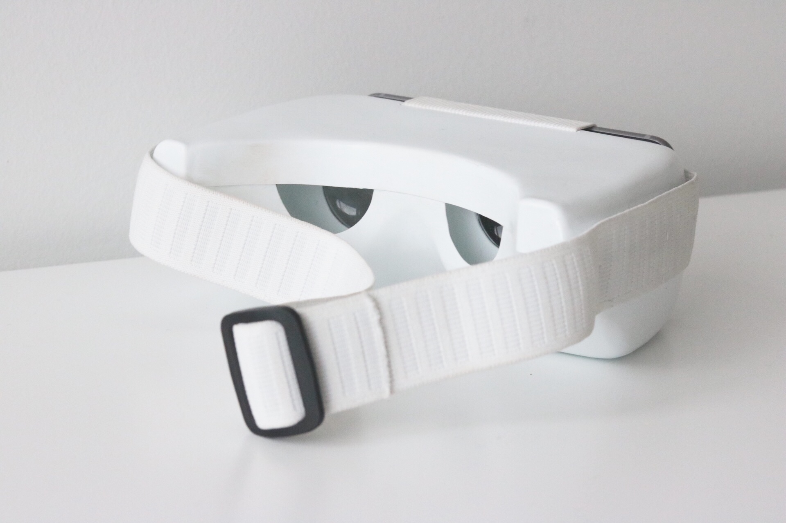

Virtual Reality Medset, 2017
Summary
The Virtual Reality Medset is a product designed for practicing medical students. Its purpose is to simulate medical operations in order to give students more access to such experiences. By using plastic and fabric, the Medset also aims at lowering the need for donated organs and expensive medical dummies.

Summary
The Virtual Reality Medset is a product designed for practicing medical students. Its purpose is to simulate medical operations in order to give students more access to such experiences. By using plastic and fabric, the Medset also aims at lowering the need for donated organs and expensive medical dummies.